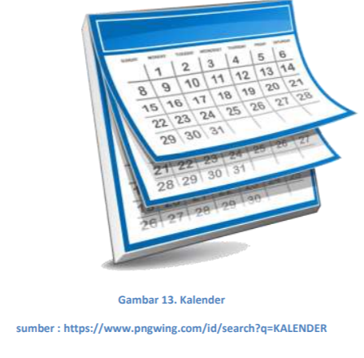

<!DOCTYPE html>
<html lang="en">

<head>
  <meta charset="utf-8">
  <meta content="width=device-width, initial-scale=1.0" name="viewport">

  <title>Halaman Utama</title>
  <meta content="" name="description">
  <meta content="" name="keywords">

  <!-- Favicons -->
  <link rel="shortcut icon" href="LOGO.png">


  <!-- Google Fonts -->
  <link href="https://fonts.googleapis.com/css?family=Open+Sans:300,300i,400,400i,600,600i,700,700i|Raleway:300,300i,400,400i,500,500i,600,600i,700,700i|Poppins:300,300i,400,400i,500,500i,600,600i,700,700i" rel="stylesheet">

  <!-- Vendor CSS Files -->
  <link href="assets/vendor/aos/aos.css" rel="stylesheet">
  <link href="assets/vendor/bootstrap/css/bootstrap.min.css" rel="stylesheet">
  <link href="assets/vendor/bootstrap-icons/bootstrap-icons.css" rel="stylesheet">
  <link href="assets/vendor/boxicons/css/boxicons.min.css" rel="stylesheet">
  <link href="assets/vendor/glightbox/css/glightbox.min.css" rel="stylesheet">
  <link href="assets/vendor/swiper/swiper-bundle.min.css" rel="stylesheet">

  <!-- Template Main CSS File -->
  <link href="assets/css/style.css" rel="stylesheet">

  <!-- =======================================================
  * Template Name: Remember - v4.7.0
  * Template URL: https://bootstrapmade.com/remember-free-multipurpose-bootstrap-template/
  * Author: BootstrapMade.com
  * License: https://bootstrapmade.com/license/
  ======================================================== -->
</head>

<body>

  <!-- ======= Top Bar ======= -->
  <section id="topbar" class="d-flex align-items-center">

      <div class="social-links d-none d-md-flex align-items-center">
      </div>
    </div>
  </section>

  <!-- ======= Header ======= -->
  <header id="header" class="d-flex align-items-center">
    <div class="container d-flex justify-content-between">

      <div class="logo">
        <h1 class="text-light"><a href="index.html">Nindy Avisa Candra Diva</a></h1>
        <!-- Uncomment below if you prefer to use an image logo -->
        <!-- <a href="index.html"></a>-->
      </div>

      <nav id="navbar" class="navbar">
        <ul>
          <li><a class="nav-link scrollto active" href="#hero">Halaman Utama</a></li>
          <li><a class="nav-link scrollto" href="#about">Pengukuran Berat</a></li>
          <li><a class="nav-link scrollto" href="#services">Pengukuran Panjang</a></li>
          <li><a class="nav-link scrollto " href="#portfolio">Pengukuran Waktu</a></li>
          <li><a class="nav-link scrollto" href="#team">Penerapan</a></li>
          <li class="dropdown"><a href="#"><span>Lainya...</span> <i class="bi bi-chevron-down"></i></a>
            <ul>
              <li><a href="latsoal.html">Latihan Soal</a></li>
              <li><a href="pmb.html">Pembahasan Soal</a></li>
              <li><a href="ksm.html">Kesimpulan dan Daftar Pustaka</a></li>
              <li><a href="yg.html">YT dan Geogebra</a></li>
            </ul>
          </li>
        </ul>
        <i class="bi bi-list mobile-nav-toggle"></i>
      </nav><!-- .navbar -->

    </div>
  </header><!-- End Header -->

  <!-- ======= Hero Section ======= -->
  <section id="hero">
    <div class="hero-container" data-aos="fade-up">
      <h1>PENGUKURAN ( BERAT, PANJANG , DAN WAKTU )</h1>
      <h2>UNTUK 
        SISWA SEKOLAH DASAR</h2>
      <a href="#about" class="btn-get-started scrollto">Mulai Membaca</a>
    </div>
  </section><!-- End Hero -->

  <main id="main">

    <!-- ======= About Section ======= -->
    <section id="about" class="about">
      <div class="container">
          <div class="col-xl-6 col-lg-6 d-flex flex-column align-items-stretch justify-content-center py-5 px-lg-5">
            <div class="box-heading" data-aos="fade-up">
              <h4>Pengukuran Berat</h4>
              <h3>PENGUKURAN</h3>
              <p>Menurut Nurdian Siregar, pengukuran merupakan suatu kegiatan mengukur yang 
                hasil dari kegiatan mengukur tersebut merupakan ukuran dari suatu benda atau yang 
                lainnya.pengukuran juga dapat diartikan sebagai proses penentuan atau pemberian angka 
                pada sebuah objek sesuai dengan aturannya masing-masing. Aturan disini yang dimaksud 
                adalah aturan pengukuran panjang, nerat, dan waktu (Sufriadi Panggabean, 2022). </p><br>
              <p>Pengukuran merupakan sebuah proses atau suatu kegiatan untuk mengidentifikasi 
                besar kecilnya, panjang pendeknya, atau berat ringannya suatu objek. Pengukuran dalam 
                modul ini meliputi pengukuran panjang, luas, volume, dan berat (yang akan dibahas secara 
                bertahap). Pengukuran panjang dapat dilakukan dengan menggunakan satuan tidak baku dan 
                dengan menggunakan satuan baku (Andhin Dyas Fioiani)</p>
              <h3>PENGUKURAN BERAT</h3>
              <P>Pengukuran berat atau massa biasanya digunakan untuk mengukur berat sebuah objek. 
                Satuan baku yang dapat digunakan untuk mengukur berat adalah <i>𝑘g , ℎg , 𝑑𝑎g , g, 𝑑g , cg,
                𝑚g .</i></P>
            </div>
            <br>
            <p>Seperti penjelasan yang sudah tertera pada gambar bahwa jika mengkonversi/mengubah 
              nilai satuan ke satuan lainnya memiliki aturan sebagai berikut :</p>
            <p>1. Apabila dilihat dari tangga pengukuran bahwa perubahan kearah bawah atau menurun 
              maka satuan tersebut dikalikan 10 dan berlaku kelipatan.</p>
            <p>Contoh : mengubah 1 kg ke g</p>
            <p>Jawab : jarak dari kg ke g adalah turun 3 tangga, maka 1 g X 10 X 10 X 10 = 1000</p>
            <p>Jadi, 1 kg = 1 X 1000 = 1000 g
            </p><br>
            <p>Apabila perubahan satuannya kearah atas atau naik, maka nilai satuan tersebut dibagi 
              10 dan juga berlaku kelipatan.</p>
            <p>Contoh : mengubah 5000 mg ke g
            </p>
            <p>Jawab : jarak dari mg ke g adalah naik 3 tangga, maka 5000mg : 10 :10 : 10</p>
            <p>Jadi, 5000mg = 5000 : 10 : 10 :10 = 5 g
            </p><br>
            <p><i>Berdasarkan bagan tersebut, terdapat keterangan satuan baku yang lain untuk 
              mempermudah dalam mengukur berat, yaitu: </i></p>
            <br>
            <p><i>Berikut ini merupakan tabel konversi satuan massa ke massa lainnya</i></p>
            
            <h3>ALAT YANG DIGUNAKAN DALAM PENGUKURAN BERAT</h3>
            <h5>1. Timbangan badan</h5>
            <p>Seperti namanya timbangan ini digunakan untuk mengukur bobot/berat badan 
              pada seseorang. Cara menggunakan timbangan ini yaitu dengan menginjak timbangan 
              lalu kita dapat menegetahui beratnya. Satuan yang biasa digunakan dalam timbangan
              badan adalah Kg atau Kilogram.</p><br>
            <br>
            <p><i>Cara menggunakan timbangan badan :</i></p>
            <p>1.Pastikan bahwa timbangan berfungsi dengan benar</p>
            <p>2.Jarum timbangan dimulai dari angka 0
            </p>
            <p>3.Letakan timbangan pada lantai yang rata</p>
            <p>4.Injak timbangan dan pastikan bahwa bobot tubuh seluruhnya ada ditimbangan
            </p>
            <p>Lihat hasil timbangan dan selesai
            </p><br>
            <h5>2. Timbangan Bayi</h5>
            <br>
            <p><i>Cara menggunakan timbangan bayi :
            </i></p>
            <p>1.Pastikan bahwa timbangan berfungsi dengan baik</p>
            <p>2.Angka timbangan harus dimulai dari 0</p>
            <p>3.Baringkan bayi diatas timbangan dengan hati-hati</p>
            <p>4.Hasil timbangan keluar dan dapat dilihat</p><br>
            <h5>3. Timbangan pasar </h5>
            <p>Neraca kodok atau yang biasa disebut timbangan pasar merupakan timbangan 
              yang biasa digunakan olen para pedagang untuk menimbang benda yang tidak terlalu 
              berat. Pada timbangan pasar ini dilengkapi dengan anak batu yang mempunyai 
              berbagai ukuran seperti 50 gram, 100 gram, 200 gram, 500 gram, dan juga 1000 gram. 
              Tetapi, timbangan ini hanya memiliki kapasitas sekitar 10 kg.</p>
            <br>
            <p><i>Cara menggunakan timbangan pasar :</i></p>
            <p>1.Pastikan timbangan seimbang</p>
            <p>2.Letakkan benda pada tempatnya</p>
            <p>3.Letakkan sejumlah anak batu untuk menyesuaikan berat barang sehingga 
              seimbang.
              </p>
            <p>4.Apabila kedua sisi sudah seimbang maka berat yang benar adalah sesuai 
              ukuran anak batu yang digunakan.
            </p>
          </div>
        </div>

      </div>
    </section><!-- End About Section -->

    <!-- ======= Why Us Section ======= -->
    <section id="why-us" class="why-us">
      <div class="container">

        <div class="section-title" data-aos="zoom-in">
          <h2>*Catatan*</h2>
          <h3>3 alat ukur <span>Di atas</span>?</h3>
        </div>

        <div class="row">

          <div class="col-lg-4">
            <div class="box" data-aos="fade-up">
              <span>01</span>
              <h4>Timbangan Bayi</h4>
            </div>
          </div>

          <div class="col-lg-4 mt-4 mt-lg-0">
            <div class="box" data-aos="fade-up" data-aos-delay="100">
              <span>02</span>
              <h4>Timbangan Badan</h4>
            </div>
          </div>

          <div class="col-lg-4 mt-4 mt-lg-0" data-aos="fade-up" data-aos-delay="200">
            <div class="box">
              <span>03</span>
              <h4>Timbangan Pasar</h4>
            </div>
          </div>

        </div>

      </div>
    </section><!-- End Why Us Section -->

    <!-- ======= Counts Section ======= -->
    <section id="counts" class="counts">
      <div class="container">

        <div class="row counters">
        </div>

      </div>
    </section><!-- End Counts Section -->

    <!-- ======= Cta Section ======= -->
    <section id="cta" class="cta">
      <div class="container" data-aos="zoom-in">

        <div class="text-center">
          <h3>Poin selanjutnya</h3>
          <p>Jika anda belum memahami materi di atas, disarankan untuk kembali membacanya</p>
          <a class="cta-btn" href="#">Kembali ke Atas!</a>
        </div>

      </div>
    </section><!-- End Cta Section -->

    <!-- ======= Services Section ======= -->
    <section id="services" class="services">
      <div class="container">

        <div class="section-title" data-aos="zoom-in">
          <h2>Pengukuran Panjang</h2>
          <h3>Penjelasan <span>Pengukuran Panjang </span></h3>
          <p>Panjang dapat didefinisikan sebagai besaran yang menyatakan jarak dua titik. 
            Sedangkan pengukuran panjang adalah suatu kegiatan dimana kita mengukur panjang dari 
            suatu benda dengan alat bantu ukur.</p><br>
          <h5>Pengukuran Baku</h5>
          <p>Pengukuran baku adalah sebuah pengukuran yang menggunakan satuan baku yang 
            hasilnya tetap atau standar. Terdapat dua acuan pengukuran baku yang digunakan yaitu 
            pengukuran sistem Inggris dan pengukuran sistem Metrik. Pengukuran sistem Inggris 
            dikembangkan dari benda-benda yang ada di sekitar kita dan telah distandarkan. Beberapa 
            contoh satuan baku pengukuran panjang sistem Inggris antara lain yard, feet, dan inchi. 
            Beberapa contoh satuan baku pengukuran berat dan volume sistem Inggris antara lain pound, 
            cup, dan gallon. Satuan baku yang berlaku untuk mengukur panjang sebuah benda ataupun 
            jarak adalah kilometer (𝑘𝑚), hektometer (ℎ𝑚), dekameter (𝑑𝑎𝑚), meter (𝑚), desimeter (𝑑𝑚), 
            centimeter (𝑐𝑚), dan millimeter (𝑚𝑚)</p><br>
          <br>
          <p><i>Seperti penjelasan yang sudah tertera pada gambar bahwa jika mengkonversi/mengubah 
            nilai satuan ke satuan lainnya memiliki aturan berbeda sebagai berikut : </i></p><br>
          <p>1. Apabila dilihat dari tangga pengukuran bahwa perubahan kearah bawah atau 
            menurun maka satuan tersebut dikalikan 10 dan berlaku kelipatan.</p>
          <p>Contoh : mengubah 1 km ke m
          </p>
          <p>Jawab : jarak dari km ke m adalah turun 3 tangga, maka 1 km X 10 X 10 X 10 = 
            1000</p>
          <p>Jadi, 1 km = 1 X 1000 = 1000 m</p><br>
          <p>2. Apabila perubahan satuannya kearah atas atau naik, maka nilai satuan tersebut 
            dibagi 10 dan juga berlaku kelipatan.</p>
          <p>Contoh : mengubah 5000 mm ke m</p>
          <p>Jawab : jarak dari mg ke g adalah naik 3 tangga, maka 5000mm : 10 :10 : 10</p>
          <p>Jadi, 5000mm = 5000 : 10 : 10 :10 = 5 m</p><br>
          <p>Berdasarkan bagan tersebut, terdapat keterangan satuan baku yang lain untuk mempermudah 
            dalam mengukur berat, yaitu: </p><br>
          <br>
          <h5>Contoh soal :</h5><br>
          <p>1. 5000 dam = .......... m</p>
          <p>Jarak dam ke m adalah turun 1 tangga</p>
          <p>Maka, 5000 dam X 10</p>
          <p>5000 dam = 5000 X 10 = 50.000 m</p><p><br>
          <p>2. 300 cm = ..........m</p>
          <p>Jarak cm ke m adalah naik 2 tangga
          </p>
          <p>Maka, 300 cm : 10 : 10</p>
          <p>300 cm = 300 : 10 : 10 = 3m</p><br>
          <h5>Contoh soal penerapan pengukuran panjang dikehidupan sehari-hari</h5>
          <p><b>1. Ada sebuah pensil yang diletakan disamping penggaris seperti pada gambar, tentukan 
            panjang pensil tersebut</b></p><br>
          <br>
          <p>Jawab :</p>
          <p>Karena posisi pensil sudah sesuai dengan angka 0, maka untuk menentukan panjang 
            pensil adalah dengan melihat ujung pensil itu berada. Sesuai yang tertera pada 
            gambar, maka panjang pensil adalah 11 cm.</p><br>
          <p><b>2. Diketahui bahwa jarak rumah Vera kerumah Varo adalah 1.2 km. Tentukan jarak 
            rumah Vera kerumah Varo dalam bentuk meter</b></p>
          <p>Jawab:</p>
          <p>Dilihat dari tangga pengukuran panjangng bahwa jarak km ke m adalah turun 3 
            tangga. Maka, 1.2 km X 10 X 10 X 10 = 1200 </p>
          <p>Sehingga jarak rumah Vera kerumah Varo dalam satuan meter adalah 1200 meter</p><br>
          <p><b>3. Diketahui pnjang sebuah tongkat 485 cm. Bila tongkat tersebut dipotong sepanjang 2 
            m. Panjang tongkat yang masih tersisa adalah …..cm</b>
          </p>
          <p>Jawab :</p>
          <p>Pertama, ubahlah satuan 2 m ke sataun cm. Jarak m ke cm adalah turun 2 tangga.
            Maka, 2 m = 2 X 10 X 10 = 200 cm</p>
          <p>Kedua, karena tonggat tersebut dipotong, maka bentuk hitungan yang digunakan 
              adalah pengurangan.</p>
          <p>Jadi 485 cm – 200 cm = 285 cm. Sehingga panjang tongkat yang terisisa dlah 285 cm.
          </p><br>
          <h5>Pengukuran Tidak Baku</h5>
          <p>Pengukuran panjang dengan menggunakan satuan tidak baku merupakan sebuah 
            pengukuran yang memungkinkan perbedaan hasil karena menggunakan alat ukur yang tidak 
            standar. Diantara sekian banyak alat ukur yang bisa digunakan secara tidak baku, yang paling 
            populer alat ukur tidak baku misalnya depa, langkah, jengkal, punggung tangan, jam pasir, 
            posisi matahari, tongkat, hasta, kawat, benang, dan bahkan cangkir.</p><br>
          <p>Contoh Soal : </p><br>
          <p><b>1. Ukurlah panjang salah satu meja di rumahmu dengan jengkal, lalu tuliskan hasilnya di 
            buku</b></p><br>
          <p>Jawab : </p>
          <p>Setiap orang memiliki ukuran jengkal dan ukuran meja yang berbeda, sehingga hasil 
            nya pun setiap orang akan berbeda.
          </p>
          <p>Panjang meja = .......... jengkal </p>
          <p>Misalnya, panjang meja dirumah Vina adalah 10 jengkal tangan Vina. Sedangkan 
            panjang Vano adalah 8 jengkal tangan Vano.</p><br>
          <p><b>2. Ukurlah jarak dari pintu rumah ke kamar kalian masing-masing dengan langkah, dan 
            tuliskan hasilnya dibuku</b></p><br>
          <p>Jawab : </p>
          <p>Sama seperti soal sebelumnya, setiap orang memiliki ukuran langkah dan ukuran 
            rumah yang berbeda.</p>
          <p>Jarak pintu rumah ke kamar = .......... langkah</p>
          <p>Misalnya, jarak dari pintu ke kamar dirumah Sena adalah 13 langkah kaki sena. 
            Sedangkan jarak dari pIntu ke kamar Seno adalah 23 langkah kaki seno karena 
            rumahnya lebih luas. 
            </p><br>
          <h5><b>ALAT YANG DIGUNAKAN DALAM PENGUKURAN PANJANG</b></h5>
          <h3>1. Roll meter</h3>
          <p>Roll Meter merupakan alat ukur untuk mengukur panjang yang bisa digulung. 
            Panjang maksimal yang dapat diukur adalah 25 – 50 meter. Meteran ini sering 
            digunakan oleh tukang bangunan atau pengukur lebar jalan. Pita ukur atau Roll Meter 
            tersedia dalam ukuran panjang 10 meter, 15 meter, 30 meter sampai 50 meter.</p><br>
          <br>
          <p><i>Cara menggunakan Roll Meter :</i></p>
          <p>1. Pastikan roll meter yang digunakan dapat berfungsi dengan baik</p>
          <p>2. Kaitkan ujung meteran dengan ujung objek yang ingin diukur</p>
          <p>3. Rentangkan meteran hingga titik ujung objek</p>
          <p>4. Hasil ukuran dapat dilihat dan selesai</p><br>
          <h3>2. Meteran Pita</h3>
          <p>Meteran pita merupakan alat ukur yang sering digunakan oleh para penjahit, 
            pedagang kain, dan perancang busana. Biasanya metran pita dipakai untuk mengukur 
            ukuran tubuh, ukuran bahan, dan membuat pola pakaian. Biasanya panjang meteran 
            pita adalah 150 cm dan ukuran terpanjang adalah 3 – 5 meter.</p><br>
          <br>
          <p><i>Cara Menggunakanya : </i></p>
          <p>1. Pastikan bahwa meteran yang digunakan dalam kondidi baik dan tidak ada 
            kerusakan</p>
          <p>2. Jika ingin mengukur lingkar lengan, maka lilitkan meteran pita pada lengan. 
            Begitupun jika ingin mengukur yang lain karena meteran ini bersifat 
            mengikuti bentuk objek</p>
          <p>3. Hasil sudah dapat dilihat dan selesai</p>
          <h3>3. Penggaris </h3><br>
          <br>
          <p><i>Cara menggunakan penggaris : </i></p>
          <p>1. Pastikan penggaris yang dipakai masih berfungsi atau layak digunakan</p>
          <p>2. Letakan ujung objek yang ingin diukur pada angka 0</p>
          <p>3. Pastikan posisi penggaris lurus</p>
          <p>4. Lihat ujung objek lainnya untuk mengetahui hasil </p>
          <p>5. Hasil sudah diketahui dan selesai
          </p>
        </div>

        <div class="row">
          <div class="col-lg-4 col-md-6 d-flex align-items-stretch">
            <div class="icon-box" data-aos="zoom-in">
              <div class="icon"><i class="bx bxl-dribbble"></i></div>
              <h4><a href="">Roll Meter</a></h4>
              <p>Panjang maksimal yang dapat diukur adalah 25 – 50 meter.</p>
            </div>
          </div>

          <div class="col-lg-4 col-md-6 d-flex align-items-stretch mt-4 mt-md-0">
            <div class="icon-box" data-aos="zoom-in" data-aos-delay="100">
              <div class="icon"><i class="bx bx-file"></i></div>
              <h4><a href="">Meteran Pita</a></h4>
              <p>Biasanya panjang meteran 
                pita adalah 150 cm dan ukuran terpanjang adalah 3 – 5 meter.
              </p>
            </div>
          </div>

          <div class="col-lg-4 col-md-6 d-flex align-items-stretch mt-4 mt-lg-0">
            <div class="icon-box" data-aos="zoom-in" data-aos-delay="200">
              <div class="icon"><i class="bx bx-tachometer"></i></div>
              <h4><a href="">Penggaris</a></h4>
              <p>Alat ukur ini sendiri memiliki skala terkecil sekitar 1mm atau 0,1cm.</p>
            </div>
          </div>

        </div>

      </div>
    </section><!-- End Services Section -->

    <!-- ======= Portfolio Section ======= -->
    <section id="portfolio" class="portfolio">
      <div class="container">

        <div class="section-title" data-aos="zoom-in">
          <h2> PENGUKURAN WAKTU</h2>
          <h3>Penjelasan <span>Pengukuran Waktu</span></h3>
        </div><br>
        <p>Pengukuran waktu dilakukan untuk mengukur berapa lama sesuatu berlangsung. 
          Misalnya, berapa menit waktu yang dibutuhkan siswa untuk melakukan sesuatu. Pengukuran 
          adalah membandingkan besaran yang digunakan dengan besaran standar. Sesuai dengan 
          namanya, pengukuran waktu ini menggunakan jam henti atau stopwatch sebagai alat 
          utamanya. Cara ini sering digunakan karena merupakan cara yang paling banyak dikenal, 
          alasan lainnya yang menyebabkan metode ini sering digunakan adalah kesederhanaan aturanaturan pengukuran yang dipakai (Sutalaksana, 2006)</p><br>
        <br>
        <p>Penjelasan konversi pengukuran waktu :</p><br>
        <br>
        <h3><b>Contoh Soal : </b></h3>
        <p><b>1. 2 jam = .......... menit</b></p><br>
        <p><i>Jawab : </i></p>
        <p>: dilihat dari tabel diatas bahwa 1 jam = 60 menit
          Maka, 2 jam = 2 X 60 = 120 menit</p><br>
        <p><b>2. 1 jam + 25 menit = .......... detik</b></p><br>
        <p><i>Jawab :</i></p>
        <p> ubah jam dan menit ke satuan detik. 
          1 jam = 3600 detik
          25 menit = 25 X 60 detik = 1500 detik 
          Maka, 1 jam + 2 menit = 3600 + 1500 = 5100 detik</p><br>
        <br>
        <p><b>4. Tita dan Tito berangkat ke sekolah pukul 6.50 dan sampai disekolah pukul 
          7.15. Maka berapa lama waktu yang dibutuhkan untuk sampai ke sekolah ?
          </b></p><br>
        <p><i>Jawab : </i></p>
        <p>menggunakan hitungan maksimal 60 menit
          Berangkat 6.50 
          Sampai 7.15
          <br>Maka, lama waktu 6.50 ke 7.00 = 10 menit<br>
           7.00 ke 7.15 = 15 menit<br>
          Sehingga, waktu yang ditempuh Tita dan Tito adalah 10 menit + 15 menit = 
          25 menit
          </p>
        <h5><b>ALAT YANG DIGUNAKAN DALAM PENGUKURAN WAKTU</b></h5>
        <h3><b>1. Jam Analog</b></h3><br>
        <p>Jam analog merupakan jam yang menggunakan jarum untuk menunjukkan 
          waktu nya. Pada jam analog, terdapat 3 jarum jam yang memiliki fungsi bereda. 
          Jarum pendek menunjukan jam, jarum panjang menunjukan menit, dan jarum lain nya 
          yang bergerak teratu itu menunjukan detik. </p><br>
        <br>
        <p><i>Cara Menggunakan Jam Analog : </i></p>
        <p>1. Pastikan jam berfungsi dengan benar <br>
          2.Untuk menentukun jam berapa sekarang maka yang harus dilihat pertama kali 
          adalah jarum pendek yang menunjukan jam, lalu jarum panjang yang 
          menentukan menit, dan terakhir jarum yang berputar teratur menunjukan detik 
          agar lebih detail dalam menentukan waktu.</p><br>
        <h3><b>2. Stopwatch</b></h3>
        <p>Stopwatch ialah alat yang biasa digunakan untuk melakukan pengukuran 
          durasi waktu yang diperlukan maupun yang sudah berlalu. Sama seperti jam analog, 
          alat ini digunakan untuk mengukur waktu namun stopwatch memiliki keefektifan 
          waktu yang lebih dibandingkan jam biasa.</p><br>
        <br>
        <h3><b>3. Kalender</b></h3>
        <p>Kalender merupakan suatu sistem untuk menamai sebuah periode waktu 
          (misal: hari). Nama-nama ini dikenal sebagai tanggal kalender. Didalam kalender 
          biasanya terdapat tanggal, hari, bulan, dan juga tahun. Periode digunakan nya 
          kalender biasanya hanya satu tahun. Maka ditahun selanjutnya kalender perlu diganti 
          dengan yang baru.
          </p><br>
        <br>

        


    <!-- ======= Team Section ======= -->
    <section id="team" class="team">
      <div class="container">

        <div class="section-title" data-aos="zoom-in">
          <h2>Penerapan</h2>
          <h3>PENERAPAN PENGUKURAN <span>DALAM KEHIDUPAN SEHARI-HARI</span></h3>
          <p>Berikut penjelasan penerapan dalam kehidupan sehari-hari : </p>
        </div>

        <div class="row">

         
        </div>
    </section><!-- End Team Section -->

    <!-- ======= Testimonials Section ======= -->
    <section id="testimonials" class="testimonials">
      <div class="container">

        <div class="testimonials-slider swiper" data-aos="fade-up" data-aos-delay="100">
          <div class="swiper-wrapper">

            <div class="swiper-slide">
              <div class="testimonial-item">
                <img src="" class="testimonial-img" alt="">
                <h3>Pengukuran Berat</h3>
                <p>
                  <i class="bx bxs-quote-alt-left quote-icon-left"></i>
                    1. Mengukur berat gula, ikan, dan sayur di pasar<br>
                    2. Mengukur berat badan<br>
                    3. Mengukur berat badan bayi di posyandu
                  <i class="bx bxs-quote-alt-right quote-icon-right"></i>
                </p>
              </div>
            </div><!-- End testimonial item -->

            <div class="swiper-slide">
              <div class="testimonial-item">
                
                <h3>Pengukuran panjang </h3>
                <p>
                  <i class="bx bxs-quote-alt-left quote-icon-left"></i>
                  1. Mengukur panjang buku dengan penggaris<br>
                  2. Mengukur panjang dan lebar jalan dengan roll meter<br>
                  3. Mengukur tinggi badan seseorang<br>
                  4. Mengukur lingkar tubuh untuk membuat baju dengan meteran pita
                  <i class="bx bxs-quote-alt-right quote-icon-right"></i>
                </p>
              </div>
            </div><!-- End testimonial item -->

            <div class="swiper-slide">
              <div class="testimonial-item">
                <img src="" class="testimonial-img" alt="">
                <h3>Pengukuran waktu : </h3>
                <p>
                  <i class="bx bxs-quote-alt-left quote-icon-left"></i>
                  1. Mengukur lamanya perjalanan dari satu tempat ketempat lainnya<br>
                  2. Mengukur waktu yang digunakan untuk menyelesaikan suatu pekerjaan<br>
                  3. Menentukan kegiatan yang akan dilakukan dikemudian hari<br>
                  4. Menentukan hari libur bersekolah atau bekerja
                  <i class="bx bxs-quote-alt-right quote-icon-right"></i>
                </p>
              </div>
            </div><!-- End testimonial item -->

          </div>
          <div class="swiper-pagination"></div>
        </div>

      </div>
    </section><!-- End Testimonials Section -->

    <div class="container footer-bottom clearfix">
      <div class="copyright">
      </div>
      <div class="credits">
        <!-- All the links in the footer should remain intact. -->
        <!-- You can delete the links only if you purchased the pro version. -->
        <!-- Licensing information: https://bootstrapmade.com/license/ -->
        <!-- Purchase the pro version with working PHP/AJAX contact form: https://bootstrapmade.com/remember-free-multipurpose-bootstrap-template/ -->
      </div>
    </div>
  </footer><!-- End Footer -->

  <a href="#" class="back-to-top d-flex align-items-center justify-content-center"><i class="bi bi-arrow-up-short"></i></a>

  <!-- Vendor JS Files -->
  <script src="assets/vendor/purecounter/purecounter.js"></script>
  <script src="assets/vendor/aos/aos.js"></script>
  <script src="assets/vendor/bootstrap/js/bootstrap.bundle.min.js"></script>
  <script src="assets/vendor/glightbox/js/glightbox.min.js"></script>
  <script src="assets/vendor/isotope-layout/isotope.pkgd.min.js"></script>
  <script src="assets/vendor/swiper/swiper-bundle.min.js"></script>
  <script src="assets/vendor/php-email-form/validate.js"></script>

  <!-- Template Main JS File -->
  <script src="assets/js/main.js"></script>

</body>

</html>